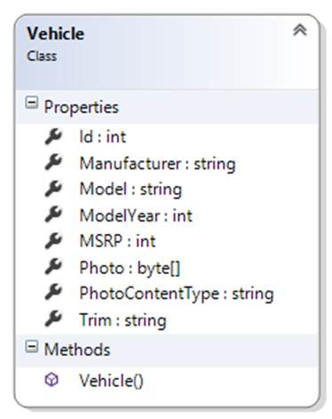
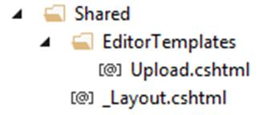
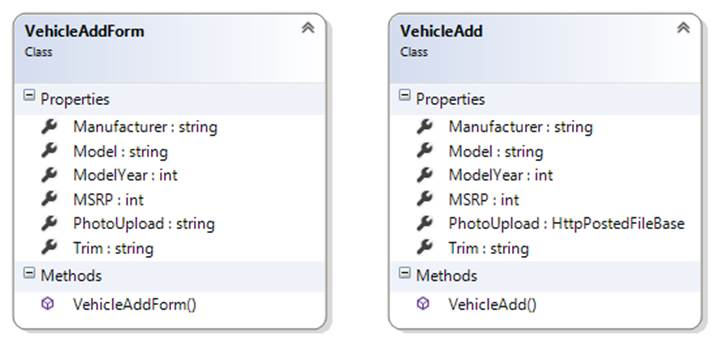
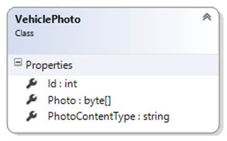

INT422 – Lecture 10
Handling non-text media items.
Test today
Test 9 is today, at the beginning of the timeslot, and will run approximately 18 minutes.
Code examples
PhotoProperty (simple scenario), PhotoEntity (complex scenario)
Theme for this week
It’s time to work with non-text media types. Our web apps must capture, store, and deliver these content types.
Today, we’ll cover the concepts and techniques for handling a simple scenario where an entity class (Product, Player, Vehicle, Album, etc.) includes a single photo.
Then, on Thursday or Friday, we’ll covers the concepts and techniques for handling a more complex scenario, where an entity class is associated with a collection of non-text media items.
Review the concepts, requesting photos/images from a browser
Every student in this course has coded a static HTML document that includes a photo. For example:
The HTML for this document is:
|
|
<!DOCTYPE html> <html> <head> <title>About Peter</title> <meta charset="utf-8" /> </head> <body> <h2>This is Peter</h2> <img src="peter.jpg" alt="" /> </body> </html> |
Notice that the photo is defined by the HTML <img> element.
The <img> element has two attributes that must be included, alt, and src.
The value of the src attribute must be a path – absolute, or relative to the current document – to the photo.
In other words, the value of the src attribute is a URL.
❝This is very important:
In an <img> element, the value of the src attribute is a URL.
Using a browser, fetch the document from the server
How does a browser fetch and render the example document from above?
To see how, and learn the details, use the browser developer tools.
For example, in Chrome, open the developer tools, and select the Network item. Then, request the document. This is what you’ll see. Click the image to open it full-size in a new tab/window.
Notice that there were TWO requests:
This is how it works. Always. When the browser fetches an HTML document, it parses the content. When it finds an HTML <img> element, it sends another request, to the URL value of the src attribute.
In detail, here’s what the request for “aboutme.html” looks like. Notice:
Click the image to open it full-size in a new tab/window.
In detail, here’s what the request for “peter.jpg” looks like. Notice:
Click the image to open it full-size in a new tab/window.
Definitions and terminology
The terminology used to identify, define, and categorize web content is a bit sloppy. Yes, there are terms that are very precise, but often they are used in an imprecise manner. That’s the sloppy part. Here, we will attempt to be precise, but we will still need to be flexible sometimes.
The example above worked with two kinds of web content, text, and a photo.
Each kind of web content is defined by its media type. In its strict definition, every kind of content – text and non-text – has a media type. For example, an HTML document’s media type is text/html.
As you know, we can work with many kinds of non-text content, including audio, video, digital documents (e.g. PDF), etc. In general, on the web, each non-text content item is defined as a media item.
While each media item can be completely defined by its media type (in its Content-Type header), web developers can also use an application of media types, known as MIME. Among other capabilities, the MIME standard describes how to deliver/render/present a media item. We often see this on pages that offer a PDF document: Sometimes, clicking the link to a PDF document will display the document in the browser. Alternatively, sometimes the PDF document will be downloaded (with our without a pop-up dialog that enables the user to continue and/or save to a specific location on their device). This behavior is influenced by the web developer, by using the Content-Disposition header.
To repeat the definitions and terminology from above:
A summary of this concept review section
If an HTML document includes a media item, the browser creates a separate request for that media item.
Therefore, whatever solution we create, it must expose the media item as a URL.
❝Note: Some students may have seen or used a “data URI”.
The Data URI scheme provides a way to include the media item’s encoded data as the value for the “src” attribute.
We will not be covering this topic, as it is beyond the scope of this course.
The big question – static media items, or dynamically-handled media items
In the past, you have written web pages and web apps that have used static media items.
In other words, you – the web developer – have added media items (photos etc.) to your project, alongside the HTML, CSS, and JavaScript source code files. Each had its own name (e.g. logo.png, banner1.jpg, etc.). If you had many similar media items, maybe you created a folder (e.g. /images/) to organize them within your project and URL namespace.
Each media item could then be referenced by a URL, using an absolute or relative path from the document that includes the (for example) HTML <img> element.
Is this the only way to handle media items?
No.
We can also dynamically handle a media item. In an ASP.NET MVC web app, what this means is that the URL to the media item would be handled by an action/method in a controller.
Why would we do this? For many reasons, including design, user experience, security, scale, flexibility, and others. In other words, we want to actively manage the way that media items are handled.
Storage of media items
So, from above, you learned that you can use a static or dynamic approach for media items.
A related issue is the storage of media items: Where should the media item be stored?
File system: Media items are in the file system, within the URL namespace of the web app.
Persistent store (i.e. database): Media items are in the persistent store (i.e. the database). The media item can be an embedded property of another entity class, or it can be defined in its own dedicated entity class.
Hybrid combination: A media item is in the file system, but its metadata is in the persistent store. Similar to above, the media item’s metadata can be in embedded properties of another entity class, or it can be defined in its own dedicated entity class.
❝Note: If/when the web app is hosted in the cloud (e.g. Azure), the cloud service may offer additional ways to store media items. Learn the foundations in today’s notes and code examples, and then you’ll be able to adapt to other approaches as needed.
The following introduces some implications for static and dynamic handling of media items, and their storage.
Implications – file system storage
In a web app that uses the file system to store media items, it must have a folder to hold the media items, maybe called “images”, or “assets”, or something that fits with the web app’s problem domain.
In an ASP.NET MVC web app, you may be tempted to use an existing folder, but resist that temptation. You cannot use App_Data, because its contents are not publicly accessible. You should not use Content, because that has a specific use now, and may evolve in the future. Therefore, create another folder.
Using a static delivery approach, the file name extension of the media item is super important. The web server (that is hosting your web app) will use the extension to set the Content-Type header in the response.
File names (for the media items) are important. Their length must be reasonable. They must be unique. To simplify coding and handling, the character set used for the file names should be neutral, especially for a web app that’s used worldwide.
Also, about the file names, should they be semantic? That’s a big area of discussion and controversy.
Using this file system storage approach, each media item is logically associated with an entity object in your problem domain. How do you maintain that association? Carefully. And separately. It is likely that the media item itself cannot store information about the association, and the file name may not be enough do do the job. Therefore, the entity object must include a property to hold the media item’s file name.
How should a file system based media item be delivered to a browser user? Statically, using a URL that maps to its file system location and file name? Or through some other dynamic and managed approach?
Beyond file names, extension names, and created/modified dates, the file system will not (and cannot) support metadata querying. For example, it will become difficult (and non-performant) to handle a query, for example, for all photos larger than 1000px wide and 800px tall, for example.
It also may be difficult or impossible to store descriptive metadata in the media item (depending upon its format).
Finally, in a web app that uses both a persistent store (i.e. database) and the file system for data storage, the web app manager now must manage two separate storage locations, and ensure they’re backed up and secure.
Implications – persistent store (database-hosted)
In a database-hosted data store, the media item’s data is stored in a byte array (the C# type is Byte[]). This data type maps nicely to both the storage and delivery components involved. As a result, it’s on equal footing with the file system in this respect.
You MUST store the media item’s media type string. During the file upload task (as you’ll learn below), that metadata is available in the Content-Type of the request.
An advantage of this storage approach is that media item metadata can be stored alongside its data, as additional properties in the class that holds the media item’s data. For example, you can store a “Title”, a lengthy “Description”, and maybe some “tags” or “keywords”. Other properties that are relevant to the media item can be stored, and their values can come from the browser user, or by programmatically inspecting the media item. (For example, the pixel resolution of an image can be extracted from the data, without user intervention.)
Delivery of the media item is managed by your app. Usually, a special-purpose controller accepts an identifier in the request URL, then locates the requested media item, and finally delivers it to the requestor.
Backing up the web app’s data is simple, because there’s a single location for all the app’s data – the persistent store.
A frequent and notable criticism of this approach is that a media item is transformed when stored, then again when retrieved, from the data store. For large media items, this work can be considerable, and may hurt performance. Acknowledged.
Implications – hybrid approach, using both techniques
It is also possible to combine both techniques. In this approach, your app stores the media item’s data in the file system, and metadata in the data store.
The file system location can be a folder in the web app’s URL namespace. Often, the file name is a GUID, or an adaptation of a GUID.
The data store class includes media item metadata, including (most importantly) the file name.
Similar to above, a special-purpose controller is used to help locate and deliver the requested media item.
This approach is often used in situations where the media item size is large (multi-MB or multi-GB), or where there’s a large number (e.g. millions) of media items to manage.
As you would suspect, today’s best-known and widely-used web apps use this approach. Name any of them, they do it: YouTube, Facebook, Netflix, etc.
Entity class design considerations when using the data store
As noted above, when using the persistent store, an entity class that includes a media item MUST have two properties:
Beyond that, other properties – metadata – can be added, if desired.
❝Pause, before continuing:
This is super important.
In a class, a media item needs two properties: A byte array for the data, and a string for the media type.
If the design of an entity class is intended to hold one single, distinct, and unique media item, then it’s acceptable to simply add these properties to the entity class. For example, if an Employee class will hold one – and only one ever – photo for the employee’s photo identification card, then the Employee class will include these two properties.
In the “…Base” view model classes, DO NOT include these properties. In fact, NEVER include these properties in view models that are used to deliver data to a browser. (However, if you want or need to detect the presence of a media item, then you can add a property to do this. For example, a bool property, programmatically-determined. Or an int property that holds the size of the byte array data.)
If an entity object logically needs a collection of media items (e.g. a photo gallery for a Product object), then create a separate entity class for the media item, and then configure the to-one and to-many (or whatever) associations needed to meet the needs of the problem domain.
Finally, if the primary purpose of the app is to manage media items (like YouTube, for example), then the entity class(es) must be designed around the needs of the app, and the media item entity classes become the central part of the design model. This topic is beyond the scope of this course.
Our task today:
Build a dynamic solution to capture, store, and deliver media items
Based on your past experience, you already know how to statically store and deliver media items. (A media item is located in your web app, and it can be accessed by a URL.) If you have ever used the HTML <input type=file> element, then you know how to capture (i.e. upload) a media item; this task requires server-side logic to save the media item in the file system. If you have not ever done this, then you will learn how capture works below, and can adapt it.
Let’s learn something new:
We will build a dynamic solution to capture, store, and deliver media items. Media items will be in the persistent store (i.e. database).
Here’s a preview of the solution’s parts and tasks:
Open the PhotoProperty code example, and study it as you continue reading the next sections.
If you want to use the code example, there are some extra photos in the project’s App_Data folder that you can choose/select. If you want accurate model, trim, and price data, it’s on the ford.ca web site.
Click the image to open it full-size in a new tab/window.
Entity class design
We return to the familiar vehicle / manufacturer problem domain. We will have only a Vehicle class.
As noted above, it has properties for the media item’s data and media type:

Capturing a media item is done
with a
view + view model + controller + manager
Let’s start with the VehicleAddForm view model class that is used to build an object for the HTML Form. It will have the expected properties.
It has a PhotoUpload property, of type string. It will also use a DataType data annotation, to identify it as a file upload property.
|
[Required] [Display(Name = "Vehicle Photo")] [DataType(DataType.Upload)] public string PhotoUpload { get; set; } |
Normally, when you ask the scaffolder to build a “create” view for a string property that uses DataType.Upload, the scaffolder will NOT generate the code in the view. You would have to add it yourself.
To save a bit of work, the code example includes an editor template, which is a feature of ASP.NET MVC. In Solution Explorer, look in the Views > Shared folder, and you will see a partial view, Upload.cshtml. Its code will be automatically used by the scaffolder to generate the code for a DataType.Upload string property.

Next, look at the VehicleAdd view model class, which describes the data submitted by the browser user.
It also has a PhotoUpload property, but its type is HttpPostedFileBase. As noted in the MSDN documentation, it is “the base class … that provide access to individual files that have been uploaded by a client”.
Compare these two classes, side-by-side. Only the type of PhotoUpload is different:

Before continuing, check that the AutoMapper “create map” statements have been defined.
Next, let’s work with the controller. The good news is that the configuration of the two “add new” methods (GET and POST) is similar to almost every other “add new” use case.
Next, the view. Use the scaffolder to generate the Create view. Then edit it, to clean up its title etc.
There is an extremely important edit that you must make to the view. The scaffolder does not do it, unfortunately. As you have seen in all scaffolded Create views, the HTML Form is defined by this code:
|
@using (Html.BeginForm()) |
That specific constructor will NOT configure the form to allow file uploads. Therefore, we must write our own constructor. Use the following, which will work for almost all scenarios that you’ll code:
|
@using (Html.BeginForm(null, null, FormMethod.Post, new { enctype = "multipart/form-data" })) |
Click the image to open it full-size in a new tab/window.
The Manager class is the next place to get some attention. Its “add new” method will look similar to all others that you’ve coded, but it will have more statements to handle the uploaded media item.
Notice that the view model class properties for PhotoUpload have the [Required] attribute. Therefore, if the code in the manager method is running, you can be assured that it has a PhotoUpload object, and therefore you don’t have to test for null etc.
Here’s the code for a typical “add new” manager method that handles an uploaded media item:
public VehicleBase VehicleAdd(VehicleAdd newItem)
{
// Attempt to add the new item
var addedItem = ds.Vehicles.Add(Mapper.Map<VehicleAdd, Vehicle>(newItem));
// Handle the uploaded photo...
// First, extract the bytes from the HttpPostedFile object
byte[] photoBytes = new byte[newItem.PhotoUpload.ContentLength];
newItem.PhotoUpload.InputStream.Read(photoBytes, 0, newItem.PhotoUpload.ContentLength);
// Then, configure the new object's properties
addedItem.Photo = photoBytes;
addedItem.PhotoContentType = newItem.PhotoUpload.ContentType;
ds.SaveChanges();
return (addedItem == null) ? null : Mapper.Map<Vehicle, VehicleBase>(addedItem);
}
A few notes about the Manager class “get…” methods, and the “…Base” class. The manager methods look the same as other methods that you have written. And, as noted earlier, the “…Base” class does NOT (and must not) include properties for the media item. Therefore, we are not leaking – unintentionally or otherwise – media item data to the controllers and views. We continue to work with relatively small-sized objects in memory.
Delivering a media item is done with a controller + manager
At this point in time in the solution, we have a way to save a media item into the persistent store (i.e. database).
How do we get it out, to deliver it to a browser user?
In our dynamic approach, we will use a special-purpose controller to deliver a media item. It will use attribute routing to shape the URL segment. The result will be that the media item is available to the browser user at a specific URL.
Above, you learned that the “…Base” class does not include media item properties. Here, we need them.
How do we fix that?
By creating a new view model class, perhaps named “…Media” or “…Photo”. It will be a really simple class, with few properties:

In the Manager class, the VehiclePhotoGetById() method looks like any other “get one” method, and it returns a VehiclePhoto object. (Yes, there is an AutoMapper “create map” defined.)
Designing the special-purpose media item delivery controller
In the code example, a Photo controller was created. Its singular purpose will be to host a “get one” method that accepts an identifier for a media item, and then deliver it.
It will use attribute routing to shape the URL, so that the web app programmer and the browser user need only use a very simple URL format:
/photo/123
The code will look like the following. Notice that it is NOT returning a view ActionResult. Instead, it is returning a file ActionResult. The File() constructor arguments will cause the request-handling pipeline to construct a correct response. Yes, it is as simple as that.
// GET: Photo/5
[Route("photo/{id}")]
public ActionResult Details(int? id)
{
// Attempt to get the matching object
var o = m.VehiclePhotoGetById(id.GetValueOrDefault());
if (o == null)
{
return HttpNotFound();
}
else
{
// Return a file content result
// Set the Content-Type header, and return the photo bytes
return File(o.Photo, o.PhotoContentType);
}
}
Click the image to open it full-size in a new tab/window.
What next?
This week, your teacher team plans to post another notes document and code example that covers the concepts and techniques for handling a more complex scenario, where an entity class is associated with a collection of non-text media items.
{kind=link}
{kind=link}
{kind=link}